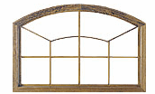
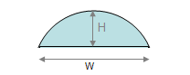

Radius of an arc or segment
Definition: The radius of an
arc
or
segment
is the
radius
of the circle of which it is a part.
A formula and calculator are provided below for the radius given the width and height of the arc.
Try this Drag one of the orange dots to change the height or width of the arc.
The calculated area is shown.

Circular arcs
turn up frequently in the real world, such as the top of the window shown on the right.
When constructing them, we frequently know the width and height of the arc and need to know the radius.
This allows us to lay out the arc using a large compass.
To calculate the radius
Given an arc or segment with known width and height:

The formula for the radius is:
where:
W is the length of the chord defining the base of the arc
H is the height measured at the midpoint of the arc's base.
Derivation
See How the arc radius formula is derived.
Calculator
Enter any two values and press 'Calculate'. The missing value will be calculated.
For example, enter the width and height, then press "Calculate" to get the radius.
It works for arcs that are up to a semicircle, so the height you enter must be less than half the width.
Finding the arc width and height
The width, height and radius of an arc are all inter-related. If you know any two of them you can find the third. For more on this see
Sagitta (height) of an arc
Using a compass and straightedge
A circle through any three points can also be found by construction with a compass and straightedge.
This also yields the location of the center point, and hence its radius. In the applet at the top of the page, the three orange dots could be used in this method.
See
Constructing a circle through three points.
Other circle topics
General
Equations of a circle
Angles in a circle
Arcs
(C) 2011 Copyright Math Open Reference.
All rights reserved